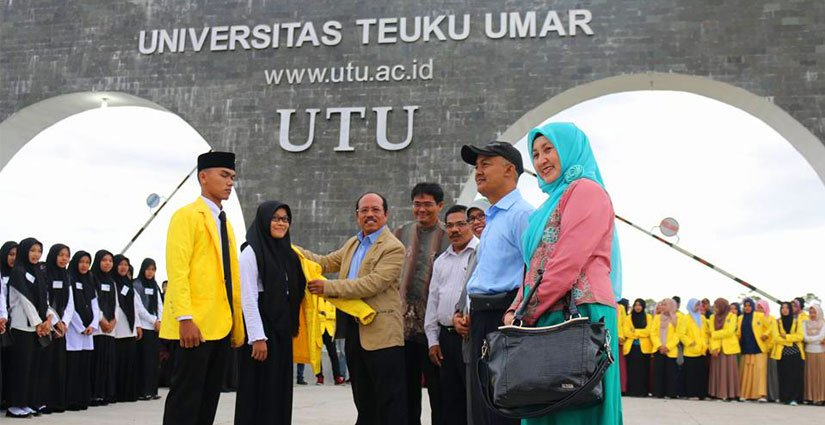
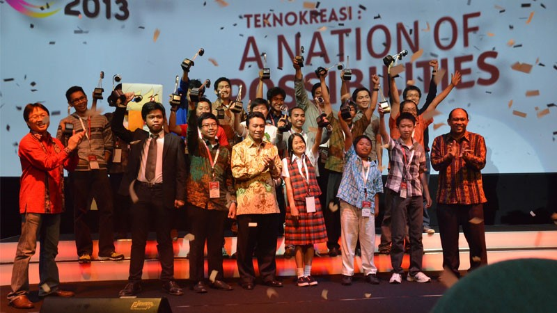
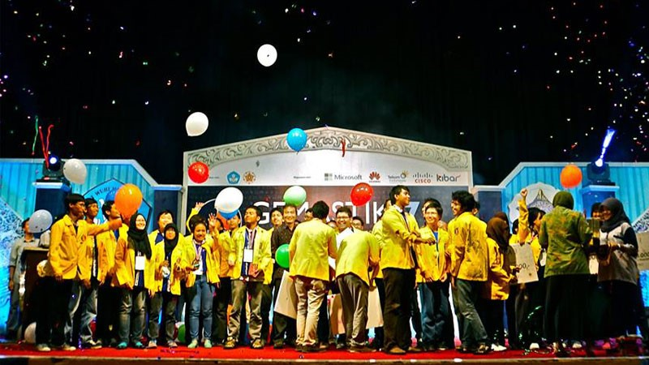
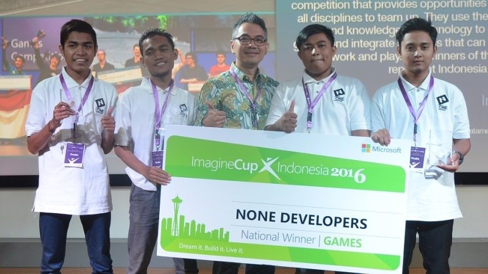

5 Kompetisi IT Indonesia yang Wajib Kamu Ketahui


Hard skill, alias kemampuan yang bisa dinilai dengan mudah seperti kemampuan menulis, menggambar, coding, dan lainnya, merupakan hal yang wajib kamu kuasai saat lulus kuliah. Kamu bisa mengasah hard skill kamu dengan bekerja di startup, melanjutkan studi, atau bahkan membangun startup sendiri. Yang jelas hard skill dalam bidang IT sangat menentukan seberapa jauh kualitas dirimu.
Hard skill yang kamu punya tentunya tidak akan terukur jika tidak dibuktikan ke berbagai macam kompetisi. Berikut ini saya coba tampilkan jajaran kompetisi IT paling bergengsi di Indonesia sebagai sarana pembuktian penguasaan hard skill kamu.

Gemastik diselenggarakan oleh Kementerian Riset Teknologi dan Pendidikan Tinggi bekerjasama dengan salah satu kampus terpilih di Indonesia. Acara ini merupakan pegelaran IT terbesar dan rutin diadakan setiap tahun sebagai ajang menyalurkan minat dan bakat dalam pengembangan teknologi informasi dan komunikasi.
Ratusan tim dari seluruh perguruan tinggi di Indonesia ikut ambil bagian pada acara ini. Cabang kompetisi yang dapat diikuti di antaranya adalah pemrograman, pengembangan aplikasi permainan, pengembangan perangkat lunak, data mining, keamanan jaringan dan sistem informasi, animasi, piranti cerdas, desain user experience, serta pengembangan bisnis TIK.
Selain kompetisi, Gemastik juga mengadakan seminar TIK yang menghadirkan sponsor besar untuk turut berpartisipasi dalam memeriahkan Gemastik selama dua hari berturut-turut. Sponsor yang pernah bekerjasama dengan Gemastik di antaranya adalah Microsoft, Intel, Gamatechno, Tokopedia, dan Kibar.

Imagine Cup adalah program tahunan yang diselenggarakan dan disponsori oleh Microsoft. Kompetisi ini dapat diikuti oleh seluruh siswa di dunia dalam rangka adu kemampuan, memecahkan masalah, dan memberi perubahan di negara mereka masing-masing dengan pemanfaatan IT.